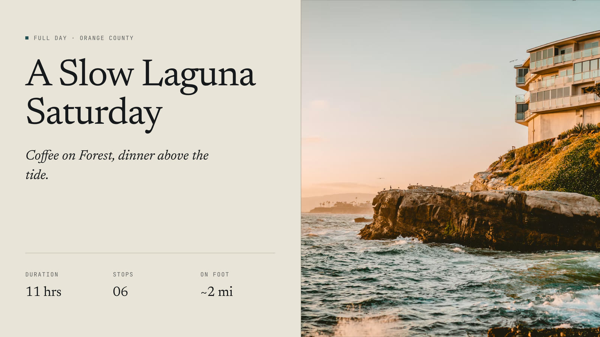
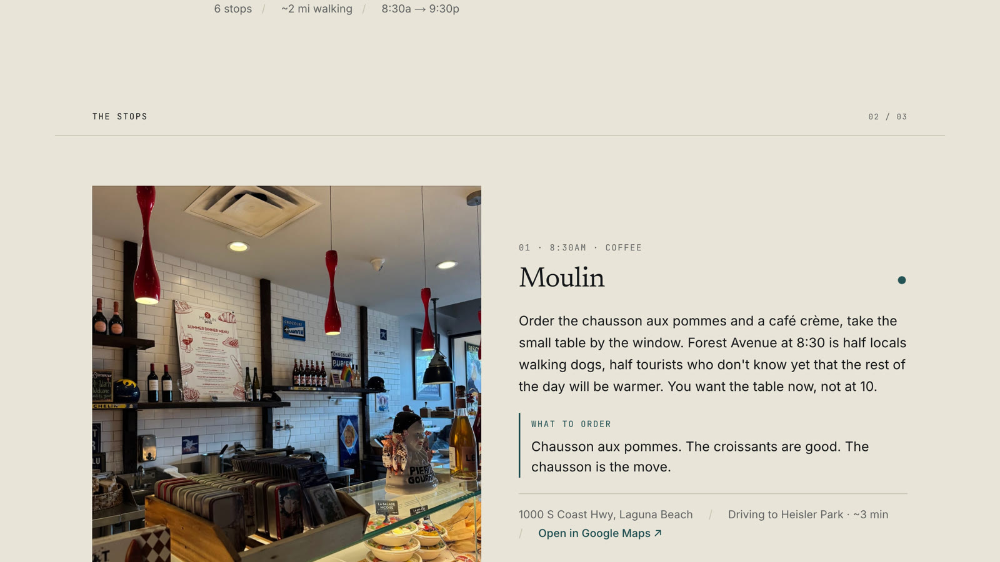
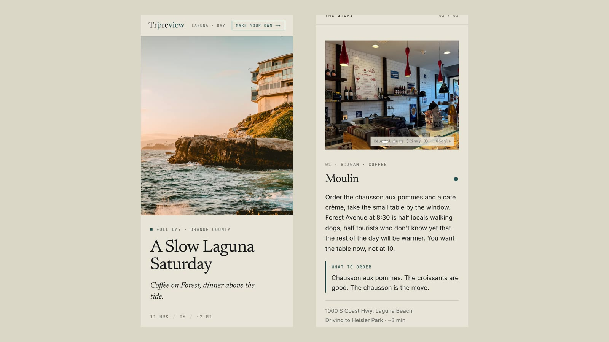
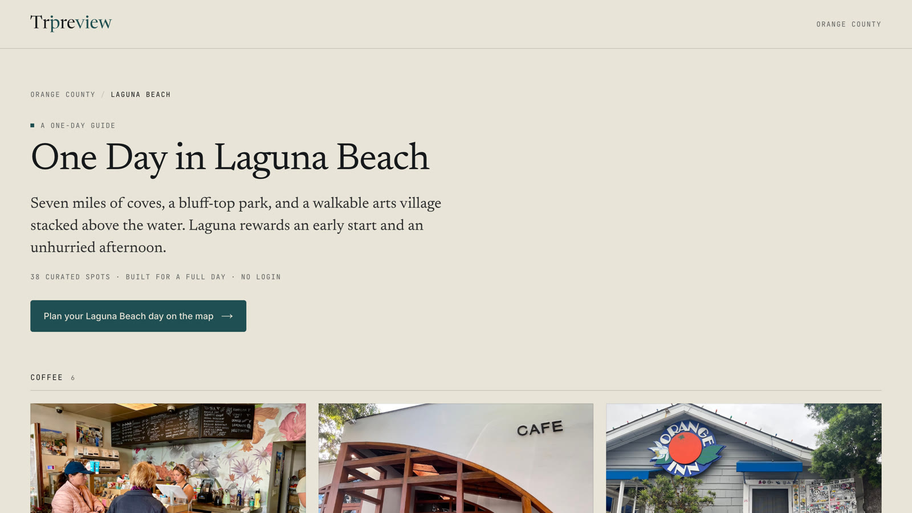

Tripreview
A travel web application built on a curated place database rather than scraped listings. I built the schema, the data pipeline, the type system and the front end, and designed the editorial system it is laid out in.
You pick a corner of Southern California on a map, say how long you have and what kind of day you want, and it plans the day from coffee to dinner in an order that keeps travel short, laid out like a magazine page you can share.
- curated places
- 1,108
- region guides
- 30

A generated trip, and the editor where you change it. Dragging dinner ahead of the rooftop drinks retimes each stop to its new place in the day and renumbers the pins on the map; tapping a stop swaps it or changes its type. Recorded on the live site without saving the change; the zoom was added afterwards.



Each stop says what to order and how far away the next one is. The site is designed for phones first, and every region has its own guide page written for search.
How it’s built
- Ratings you can compare
- Ratings go through a Bayesian average that treats every place as if it started with 100 reviews at 3.8 stars, so a 5.0 from six reviews can’t outrank a 4.7 from thousands. The same numbers sort places into tiers: a strong rating with under 100 reviews is a hidden gem, over 1,500 is a heavy hitter.
- A day that holds together
- Each trip length has a fixed shape: a full day is coffee, a walk, lunch, an activity, drinks and dinner. Each slot is a weighted draw on vibe match times rating to the power 2.5, halved for a place 3 km from the previous stop. Better places win more often, and regenerating still gives a different day.
- Drafted by a model, approved by me
- A discovery script finds well-rated places to fill gaps in each region, skipping anything already in the database by ID, by name, or by sitting within 70 m of one. Claude drafts each entry through a fixed schema, and every draft goes into a review file where I accept, edit or reject it before it is seeded.
- Photos picked by eye
- For every place the pipeline builds a contact sheet of up to six Google photos. I picked a calibration set of 14 by hand, the rest were picked to match and checked on a single review page, and the chosen three per place are resized and stored on Vercel Blob.
- A gate on the writing
- A script fails the launch if any copy a visitor can read contains an em dash or a word that reads as machine-written, like “delve”, “nestled” or “world-class”. It checks the source copy, the curated data files and the live database.
- An audit, then fixes
- A full product audit on 4 June scored the trip page 5 out of 10: the flagship trip had 18 stops and showed two coffees at 8:30am. The same day I trimmed it to a real six-stop day, made times follow each stop’s position, limited trips to the drawn area and built the two-column desktop layout.